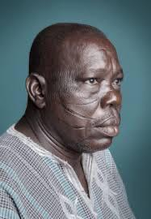
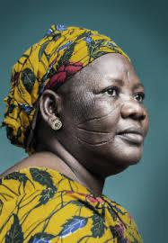
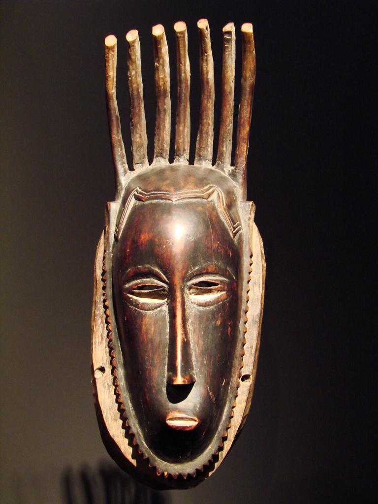
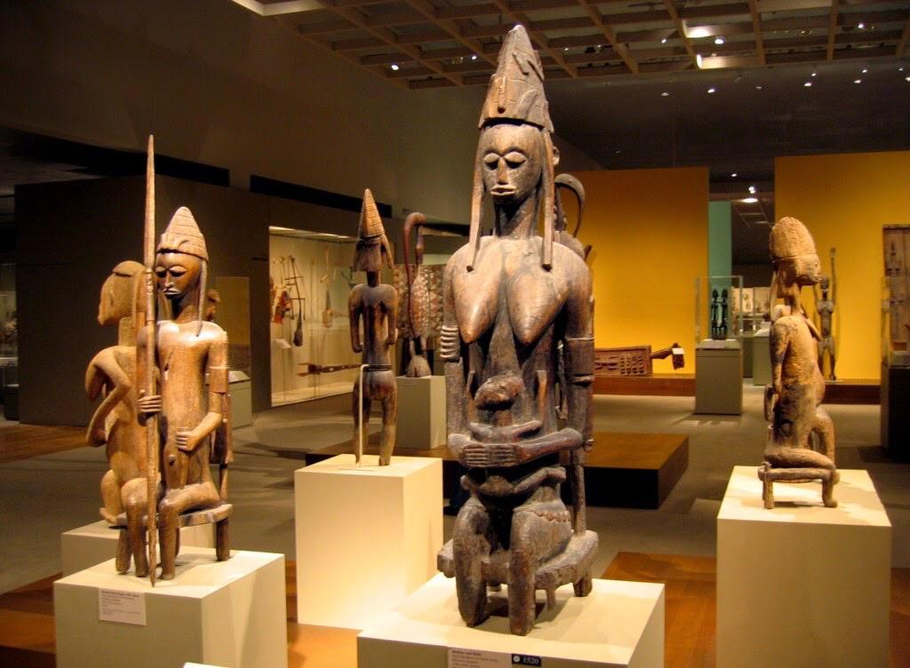

As marcas da cultura estão em todas as partes do mundo. O que para um grupo pode ser visto com absoluta normalidade, para outro pode ser olhado com estranhamento. Essa sensação pode ser sentida em inúmeras formas de alterar ou acrescentar adereços ao corpo, em algumas regiões do mundo, principalmente, em alguns países africanos, as marcas nos rostos falam muito da identidade, tradição e contam a história de uma comunidade.
 Os Akans orientais costumam ser consideradas responsáveis pela elaboração de alguns elementos quem estuda Fiolosofia africana.Dentre eles, está a ideia de matrilienearidade, entendimento segundo o qual a linha hereditária da familia segue pelo lado materno. Na cosmogonia Akan, os clãs matrilienar e patrilinear são complementares: enquanto o matrilinear é responsável por dar o sangue e estabelecer a linhagem da família, o patrilinear é responsável pela determinação do caráter, do espírito e da alma das pessoas
 